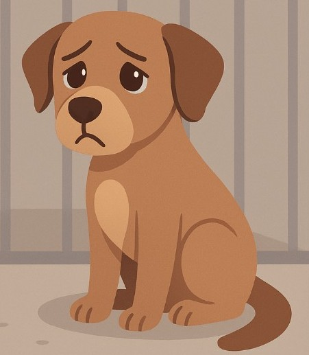

Qualcosa è andato storto e stiamo lavorando per risolverlo.
Nel frattempo, qui non ci si ferma mai: c’è chi continua ad aspettare, a sperare e a credere in una seconda possibilità. Da qui puoi tornare alla home o continuare il tuo percorso.
Torna alla home